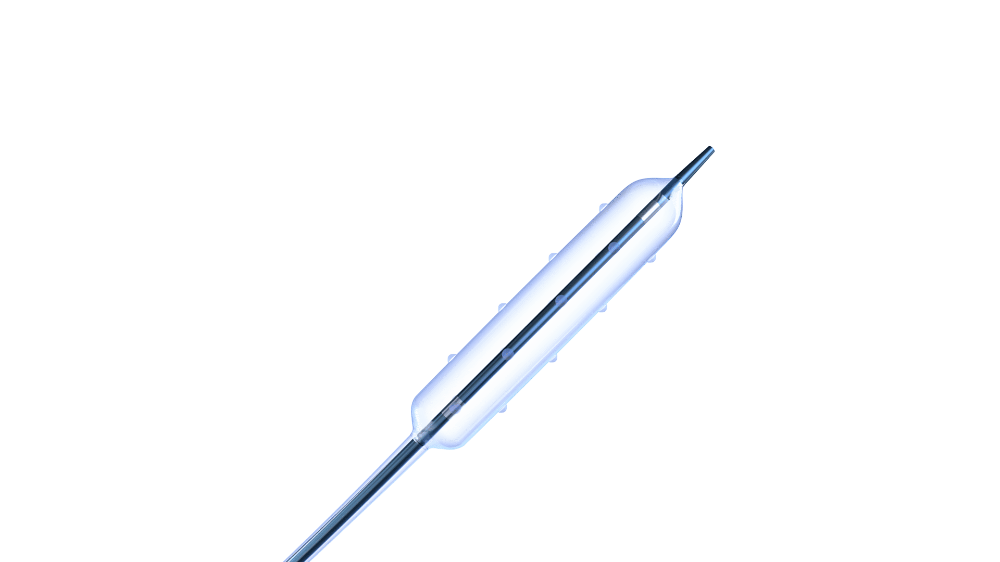
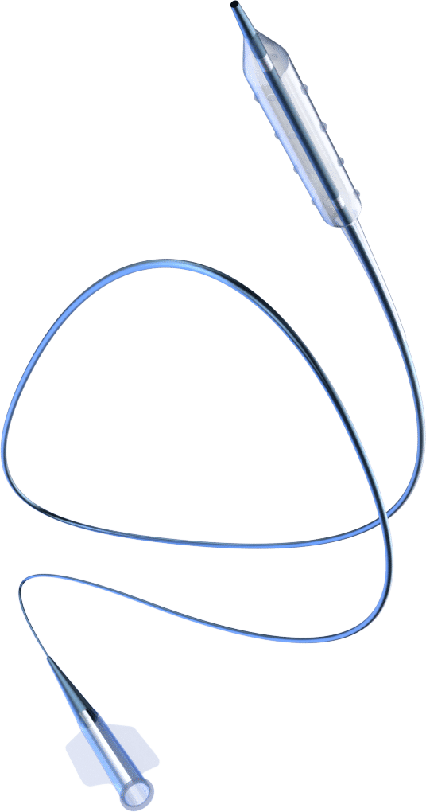

Each is a full-width band that drops into the landing page — I'd place it right after the Partners section. Tell me which id you want (2a, 2b or 2c) and I'll merge it into MD Landing.
2aDARK FULL-BLEED SHOWCASE

FEATURED DEVICE · ACROSTAK
Grip. The metal-free vessel-preparation balloon.
The original polymer-only PTCA balloon — four rows of knobs to crush calcified plaque and hold position, with none of the complications of metallic elements.
0.019"
ENTRY PROFILE
21 atm
RATED BURST
Swiss
MADE
2bLIGHT · PRODUCT AS BACKGROUND WATERMARK

FEATURED DEVICE · ACROSTAK
The Grip balloon, in the lab when it matters most.
Puncture-resistant, polymer-only construction for slippery and heavily calcified lesions — engineered in Switzerland, stocked here in Egypt.
See the Acrostak range →
2cSPLIT · PRODUCT ON TINT PANEL
FEATURED DEVICE · ACROSTAK
Grip specialty balloon
Four rows of knobs crack heavily calcified lesions and prevent slippage — the original metal-free vessel-preparation balloon, made in Switzerland.